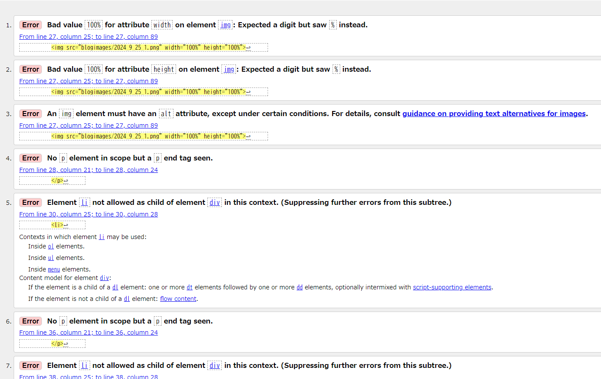

走る街を見下ろして のんびり雲が泳いでく
だからお家へ帰ろう
今日はお家へ帰ろう
疲れました？
全然。
膳 膳 和イスキー膳

退勤時に聴きたい曲でパッと思い出せるのは「オリジナルスター☆彡」「ぐーちょきぱれーど」とか アニメのEDばっかりだけど
しかも最近はすっかり涼しくなってきて、外を歩くのに一番適した気候になってきたし、歩いて帰りたい
出社しないでいいならしない方がいいんだけど、退勤した後に歩いて帰ってるときの解放感って最高
でも描きたいものを描いているとき以外の絵ってつまらないし、前回の記事のイラストとかは結構上手く描けたのになんかすごく下手になった気がする！！！

 塗りができない よく考えたら塗りの練習ってしたことがない
塗りができない よく考えたら塗りの練習ってしたことがないそれを克服すべきって気づいてるけど頑張れない だるいので！
 さっきのも塗るとこうなる ちゃんと練習しよう……
さっきのも塗るとこうなる ちゃんと練習しよう……最初に貼っている膳のイラストも「退勤したときに流れる音楽」から連想して描いたけど、横顔って全然描けないことを思い出した
ボーナス入ったらAbleton買おう……と思っているけど、本当にやる気があったらLeaperでも作曲できるはずなんだよな
しかもこの前の匿名ラジオで恐山が作曲を始めたって言ってた Cubase買ったらしい えらい
ARuFaはフリーソフトで作曲してるって言ってたからたぶんLeaper使ってるんだと思う
gimpで画像編集してAviutlで動画編集してLeaperで作曲って……多才すぎる かっけえよ……
このページのソースコードもちゃんとCSS調整して当てるべきなのに、誰が読むねんこんなの！と思ってぐちゃぐちゃなコードのまま無理やり体裁を整えている  試しにこのページのソースをバリデーションチェッカーにかけたら規約違反しかしていなかった リストも画像もpタグの中に入れて無理やりスペースを調整している
なんか最近足掻きの日記ばっかりでダサいな！！！ 弱音はツイートとして目につかないところに置いているけど、逆にこの文章をたどりやすくなるのでよくない気がする
それでは、さようなら。